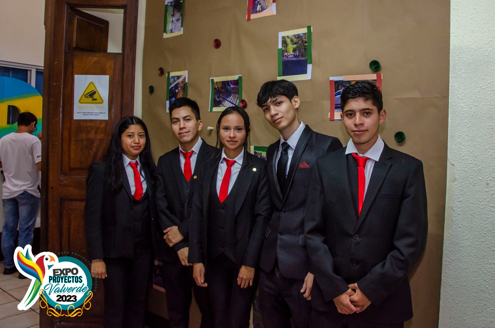
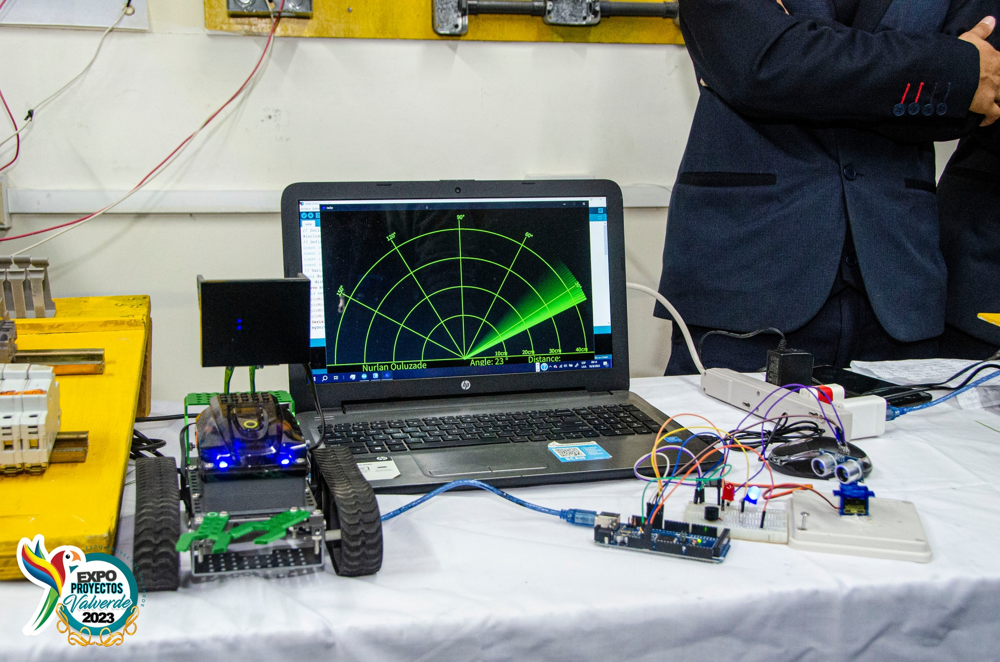
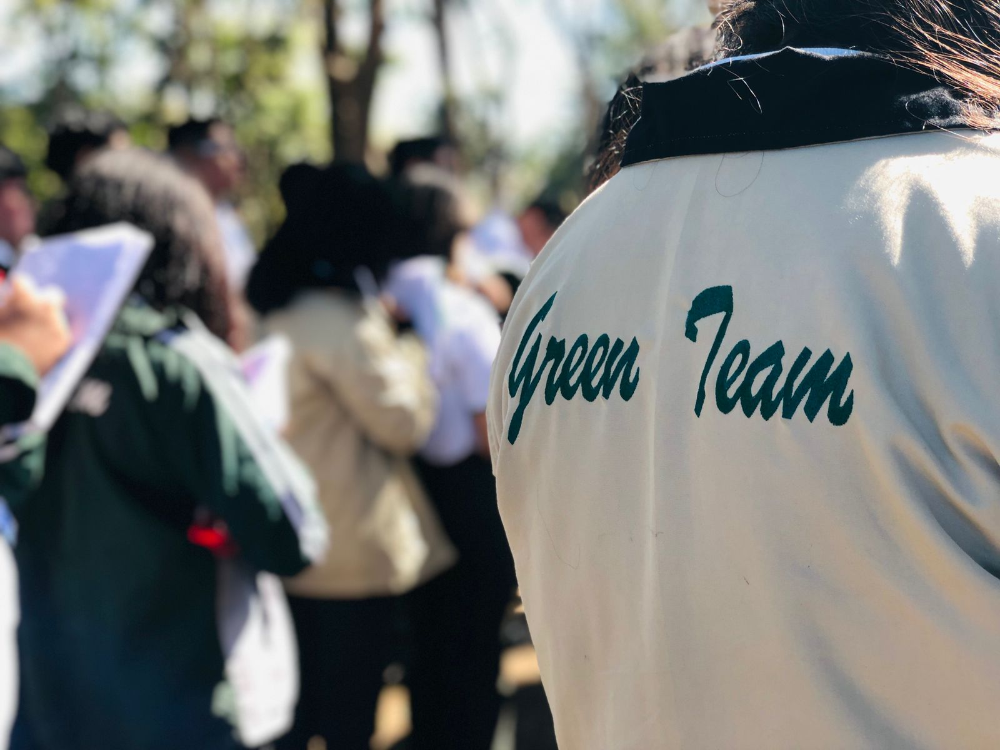
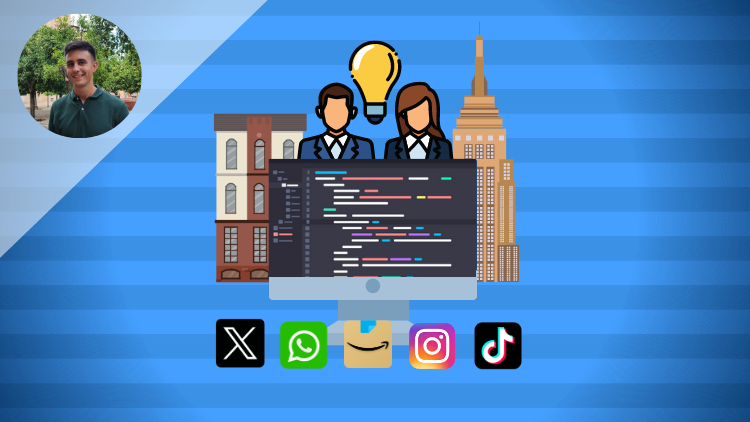
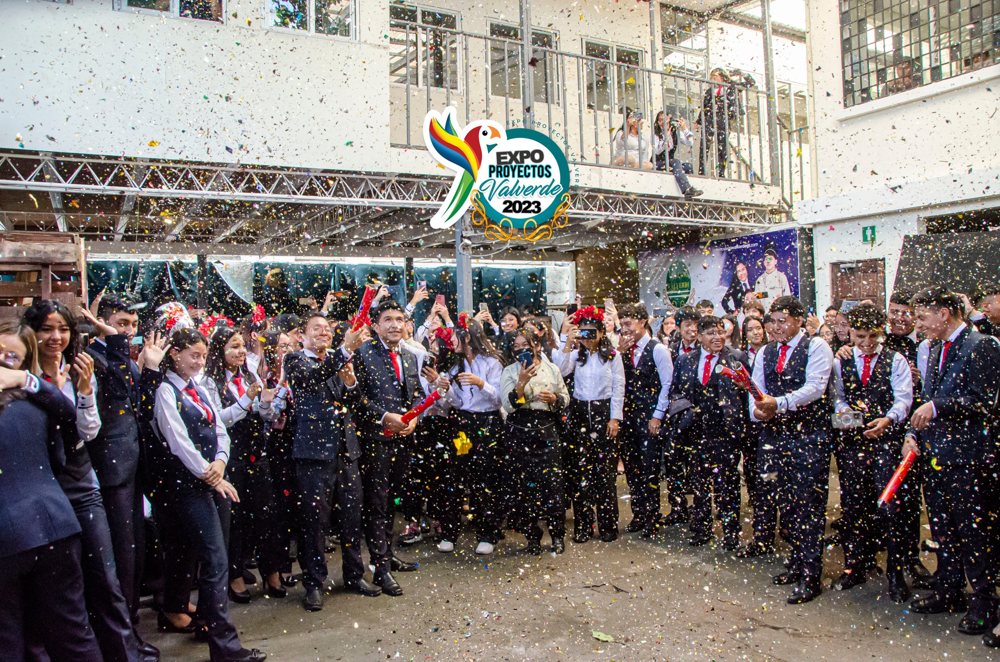
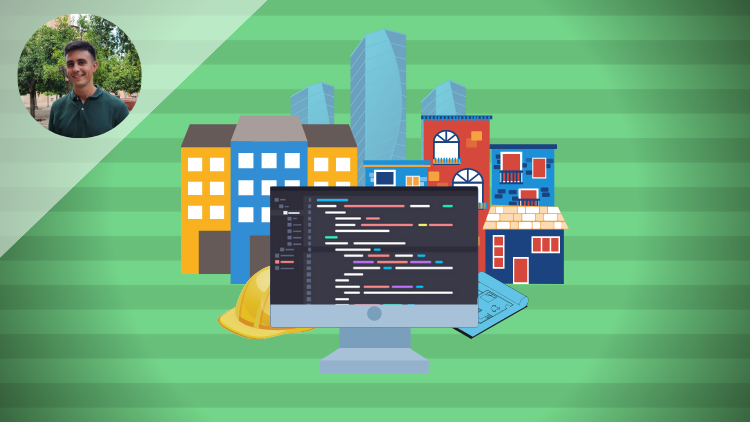

Proyecto 5to Bach en Computacion
El objetivo de esta presentación es brindar información acerca de la evaluación que presentara 5to Bachillerato. A lo largo de este informe se desarrollará el cómo se creó nuestra Página Web, los recursos que necesitamos. El diseño de un sitio web juega un papel fundamental en la participación y la experiencia del usuario. Un sitio web visualmente atractivo puede captar la atención de los visitantes y animarlos a permanecer más tiempo en el sitio. El sitio web creado por el estudiante tiene un propósito y funciones claras. El objetivo del sitio web son estudiantes y educadores interesados en aprender y enseñar sobre cuestiones ambientales. La función principal es proporcionar una plataforma para compartir información, recursos e ideas relacionadas con la sostenibilidad ambiental. El sitio web cumple su propósito al incorporar una variedad de características que apoyan la colaboración y el intercambio de conocimientos.
Brigette Caroline Mariana Zacarias Merida
Trabajar en el proyecto siento que me permitió mejorar mis habilidades de trabajo en equipo y comunicación, en lo personal siento que la clase no podría estar mejor, siento que nuestro maestro es dedicado a su trabajo, y siento que para algunas personas esto puede servir de inspiración, a demostrar que lo que ven “fácil” para nada lo es.
Darian Lissethe Avila Tejeda
yo elegí esta carrera con el fin de aprender cosas nuevas un día llegué sin saber nada me senté en un escritorio y dije bueno es un nuevo comienzo es una nueva etapa de mi vida hay cosas nuevas por lograr metas por cumplir y empecé a centrarme en lo que quería, respecto ala clase de programación que es en lo que se basa nuestra carrera considero que tenemos un buen profesor aunque en cierto punto yo no entiendo pero siento que llegaré a entender día con día y podré compilar algún programa quiero aprender más sobre programación quiero ir poco a poco paso a paso y poder descubrir que es programar, me gusta la progra pero siento que hay partes que me hace falta entender quiero aprender más y saber usar los códigos en cada ocasión
Damaris Irene Cuchun Lux
El conocimiento de las páginas de programación son muy interesantes en el sentido de que se puede colocar varias informaciones de cada usuario la cual nuca avía visto esta materia de programación me a enseñado muchas cosa nuevas que nuca imagine ver por la cual la programación es muy interesante y llama la atención de uno al ver tantos usuarios y códigos. Para mi persona es algo nuevo y realmente nuca me imagine estar programado y mucho menos poder entender que es lo de programar y ya cuando me di cuenta que en esa página o aplicación se pueden habrir barias fuentes de contacto o código y poder poner número o letras para poder programar esta materia si no a enseñado mucho más y más posibilidades de programar y hacer nuestras páginas y comprobar si es correcto todo lo que se hizo.
Persida Jasmin Barillas Castañon
La programación ha sido un cambio drástico en mi vida, a lo largo de cuarto bachillerato y quinto he aprendido cosas nuevas y muy interesantes las cuales me motivan a poder seguir indagando más sobre programar, ahora tengo en mente que cada programa, página web, juegos, etc tiene un gran procedimiento dependiendo de lo que se quiera lograr, o hacer, lleva tiempo y organización, esto lo cual es muy importante no solo en esta parte de la carrera, si no, en todas las demás áreas de nuestra vida, de cierto modo la programación no estaba estipulada para ser parte de mi, pero ha sido grandioso aprender cómo se maneja cada parte de ella y ahora, aunque me es un poco difícil poder acoplarme a ciertas áreas de la misma, puedo decir que la programación es hermosa.
Diego Moisés Zepeda Hernández
Básicamente un sitio web es un conjunto de páginas web que están conectadas entre sí y se encuentran alojadas en un servidor web. Este espacio virtual es accesible para cualquier persona con una conexión a internet, que lo visite por medio de un navegador web. Y gracias a ellos hoy en día podemos acceder a múltiple información o simplemente algo que deseamos investigar por medio de las páginas web, es una manera fácil y rápida al acceso de distinta información.
